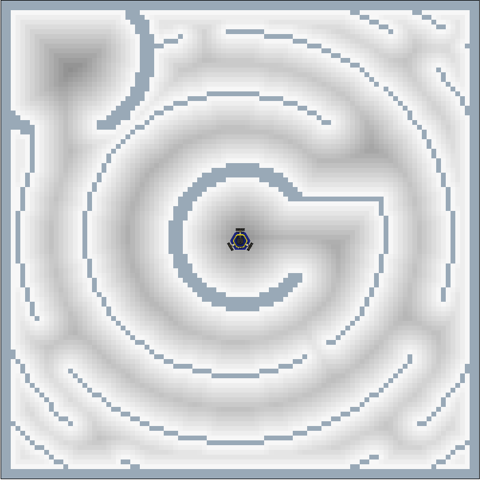

Project 3: Path Planning
Team 2: Tristan Goodell & Dominik Dulak
BFS on the Robot
BFS on the Webapp
Maze 1
Maze 2

Maze 3
Maze 4
Discussion
Strengths
The main strengths of BFS are that it is simple to implement and it finds the shortest path.
Limitations
Since BFS does not use a heuristic like A*, the algorithm explores cells that are probably not in the most optimal path. Consequently, it is computationally expensive.
BFS and the Shortest Path
BFS will always find the shortest path from the start to the goal if a path exists. However, it may take longer to do so compared to other pathfinding algortihms.
Future Improvements
In the future, implementing a heuristic that ranks future steps to avoid wasting compute time on suboptimal paths.